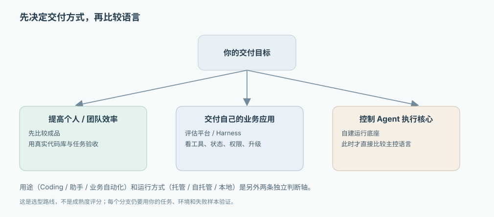
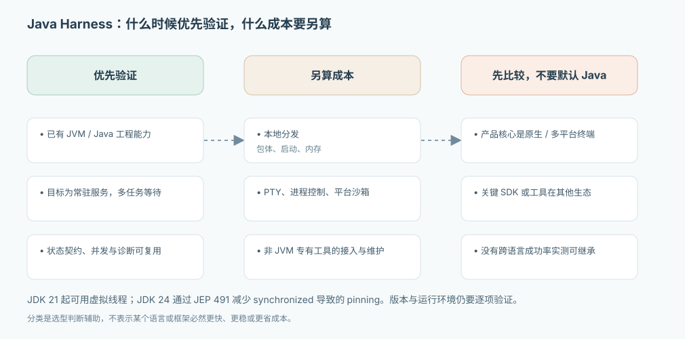
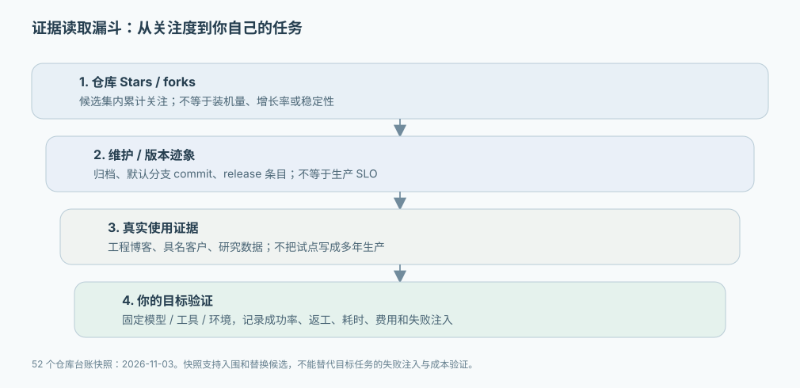

从建设责任出发
先决定交付方式，再选语言
“帮团队提高编码效率”和“做一个替客户持续办事的产品”不是同一类工程。前者可以先验证成品；后者要考虑状态、权限、恢复和长期运维。只有当你真的要控制执行核心时，主控语言才成为直接约束。

提高开发 / 办公效率
用真实代码库、资料和工具跑任务，记录完成质量、返工、耗时和费用。
成品候选与边界 →交付业务应用
比较平台或现成 Harness 的连接器、执行语义、状态、权限和升级路径。
平台候选与边界 →控制执行核心
先定义模型循环、工具策略、状态与恢复，再选主控语言和集成库。
理解 Java Harness →| 如果你的目标变化为 | 先比较什么 | 最容易犯的错 |
|---|---|---|
| 只是让个人 / 团队更快 | Coding / 通用助手成品 | 过早自建循环，忽略真实任务返工 |
| 要交付可运营业务 | 平台 / 可改造 Harness | 只看演示，不看权限、状态和升级 |
| 要控制执行核心 | 语言、运行时与恢复机制 | 把工具语言误当主控语言 |
这是有条件的选型路线，不是排名。报告没有跨语言任务成功率实测；Stars 只表示关注度。
赛道地图
三种建设责任，不能塞进一张总榜
描述一个方案至少要同时说清：交付形态（成品 / 平台 / 框架）、用途（Coding / 助手 / 业务自动化）和运行方式（托管 / 自托管 / 本地）。例如 Codex CLI 既可直接当 Coding 成品，也可作为改造底座；Dify 是建设平台，用它交付的业务才接近成品。

| 建设对象 | 读者要核对的入口 | 不能直接推出的结论 |
|---|---|---|
| 成品 | 使用者公开说明、真实任务、审查与发布边界 | 官方演示不等于你的代码库成功率 |
| 平台 / 知识工作台 | 连接器、执行语义、权限、状态、部署和升级 | 能搭建不等于跨实例恢复可靠 |
| 框架 / SDK / runtime | 普通 loop、图、暂停审批、跨实例恢复 | 功能存在不等于业务副作用 exactly-once |
| 可改造 Coding 核心 | 核心语言、文件 / 终端 / 隔离边界、维护成本 | 开放核心不等于产品层能力完整 |
快速读者的判断入口是：先看你必须维护什么。不想维护执行核心，就验证成品；想复用业务连接器但保留定制空间，就评估平台；必须控制模型循环、工具权限、状态和恢复，才进入框架 / 自建比较。
本报告的五候选地图（先入围，不是最终排名）
AI Coding 成品：Claude Code、Codex、Cursor、GitHub Copilot agents、Devin。通用助手：ChatGPT、Claude / Cowork、Gemini agent、Microsoft 365 Copilot、Perplexity Computer。框架 / 运行时：LangGraph、OpenAI Agents SDK、Google ADK、Microsoft Agent Framework、Mastra。平台：n8n、Dify、Langflow、Sim、Coze Studio。可改造 Coding 核心：Codex、OpenCode、Cline、OpenHands、Goose。顺序只便于核查，不代表性能名次。
查看八组候选与选择条件 ↗语言选择
主控语言跟着运行方式和关键依赖走
Harness 是把 Agent 动作执行下去的运行底座，管理模型循环、上下文、工具、权限和执行状态。主控语言决定这套控制逻辑怎样开发、运行和维护；它不要求模型服务、Python 工具或浏览器环境改成同一种语言。

服务端常驻任务
已有 JVM 能力且关键工具可覆盖时，Java 的虚拟线程、类型契约和诊断工具值得优先验证。
本地开发者产品
把 Rust / Go / TypeScript 放进初选，重点比较原生交付、启动、资源、系统接口和维护者能力。
| 场景信号 | 初始比较方向 | 关键提醒 |
|---|---|---|
| 已有 JVM / Java 资产，服务常驻 | Java 主控 + Spring AI 或 LangChain4j | 先验证工具覆盖、恢复和诊断 |
| 多平台终端 / 沙箱执行器 | Rust / Go / TypeScript | 把原生接口、包体和资源放同一轮比较 |
| 关键 SDK / 工具集中 Python / TS | 相应语言直接组合 vs Java 复用独立工具 | 一个工具不要求迁移整个系统 |
| 已有 .NET 服务与团队 | C# / .NET Harness | 评估动态能力、原生交付和工具覆盖 |
不要用“AI 原生”作语言结论。先列出三个不可替代的工具或 SDK；如果它们已在 Java，换语言可能新增边界；如果集中在 Python / TS，直接组合可能省更多工作。
Java 边界
Java 什么时候优先，什么时候另算成本
Java 团队建设常驻 Agent 服务时，Java 值得优先验证：它可以直接拥有执行循环、动作策略和任务状态。虚拟线程适合表达等待模型流、工具输出或用户输入；record / sealed 类型能帮助表达任务状态契约；堆、线程、GC 和 JFR 可用于长期诊断。
Java 主控可以读取仓库、保存候选动作、调用 Maven / 测试工具，并把退出码、日志和改动交回模型。这里选 Java 是因为主控和现有工程在同一生态；不是因为“Java 只能改 Java”。Maven 继续启动哪些子进程、测试环境如何回收，仍要单独验证。

最容易误判的是取消边界：取消 Java Future 不能证明 Maven、测试进程或浏览器工具已经停止；Go context 也不自动解决所有后代进程。要检查执行环境如何回收进程、管道和授权。

| 边界 | Java 能帮上什么 | 还必须另验什么 |
|---|---|---|
| 服务端等待与并发 | 虚拟线程表达等待；接口与类型表达状态 | 模型配额、锁竞争、状态大小和失败重试 |
| 长期诊断 | 堆、线程、GC、JFR 定位等待和执行事件 | 无界上下文、工具输出和租户热点 |
| 本地交付 | jpackage 或 Native Image 提供候选路径 | 包体、启动、内存、反射 / 资源 / JNI |
| 安全隔离 | 进程编排与权限入口可以由主控记录 | 不可信命令放到匹配威胁模型的沙箱 |
版本条件：虚拟线程在 JDK 21 正式提供；JDK 24 通过 JEP 491 减少 synchronized 引发的 pinning。这不替代超时、配额、状态恢复和进程清理。
最后一步
用真实任务和失败注入收束选型
仓库热度只能入围，不能验收。第一版先让一个明确任务从输入走到可审查产物：主控拥有动作策略，工具执行结果可追踪；恢复时显式保存阶段和动作标识，不因跨语言自动引入消息队列、MCP、A2A 或多个 Agent。
| 常见读法 | 校正 | 该去看什么 |
|---|---|---|
| 开源核心是 Rust，所以产品一定最适合本地终端 | 核心语言只约束你改造的那一层，产品层和工具层可能不同 | 成品边界、SDK、部署方式 |
| 工具是 Python，所以主控也要 Python | 主控语言和工具进程语言可以分开 | 工具契约、状态、失败恢复 |
| Stars 高，说明适合生产 | Stars 只是候选集内累计关注 | 维护迹象、真实使用、目标验证 |
| 支持 checkpoint，外部动作就安全 | 控制流恢复不等于外部写入 exactly-once | 幂等键、查询结果、授权与失败窗口 |

至少验证进程中断、工具超时、取消、审批后重启和状态升级。保存 checkpoint 不让外部动作 exactly-once：通知已发送但响应丢失时，恢复后重新执行可能再次通知；幂等键、查询结果和授权要由具体工具契约处理。
| 验证项 | 观察什么 | 不能只看什么 |
|---|---|---|
| 端到端任务 | 输入到可审查产物、原需求覆盖 | 单步工具调用成功 |
| 失败注入 | 中断、超时、取消、审批后重启、状态升级 | 正常路径一次通过 |
| 外部副作用 | 幂等键、查询结果、授权、失败窗口 | checkpoint 已保存 |
| 成本与协作 | 成功率、人工返工、总耗时、总费用 | Stars 或演示视频 |
- 先锁定一个可审查目标任务和原需求。
- 给主控加上动作追踪、状态版本与失败分支。
- 让两三个候选跑同一批任务，保留日志和产物。
- 制造中断、超时、取消和审批后重启。
- 按成功率、返工、耗时、费用和恢复质量决定。
52 个仓库快照与证据口径怎么读？
快照采集于 2026-11-03，记录 Stars / fork / watcher、默认分支 commit、release 或 commit Atom 条目、功能文档和许可证。证据标签 A / B / C / R 只说明来源类型，不是稳定性分数。Roo Code 归档、ADK Java 预览状态、LangGraph 幂等边界和 Java 并发机制已作本轮定点补核。
查看完整仓库台账 ↗ · 查看本轮机制补核 ↗先选交付方式，再选语言；最后让失败路径替你投票。
展开完整深入版
项目台账保留 2026-11-03 采集快照；公开副本于 2026-11-13 定点补核关键机制，没有重新采集全部仓库。
Agent 赛道与语言选型：先决定交付方式，再选运行底座
先决定直接使用、改造还是自建，再选择语言和框架。用一个完整任务解释 Java Harness 的收益与代价，项目数据和证据留在后面核查。
架构结论：先选交付方式，再选语言
**先决定交付方式，再选择 Agent 主控语言。**直接使用成品、改造现有平台、自建运行底座，承担的是不同工作。AI Coding、助手与业务自动化是用途；本地运行和托管是另一项选择。
提高开发或办公效率
先比较 Coding / 通用助手成品，用真实任务判断完成质量、返工和费用。
产品核心语言只在你准备改造执行核心时成为直接维护约束。
交付自己的业务应用
比较可视化平台、知识工作台或现成 Harness，重点看领域工具、状态、权限和升级。
现成系统可直接用，也可以是二次开发底座；“半成品”描述建设责任。
控制 Agent 如何执行
按运行方式和关键依赖选语言，再判断需要集成库、循环 SDK，还是持久运行时。
已有 Java 能力、目标为常驻服务时，Java 是优先候选。
**Java 可以直接承担完整 Harness。**在已有 JVM 能力、服务常驻、工具依赖可覆盖的条件下，并发、类型建模和长期诊断值得优先利用。本地工具若更重视原生交付、终端和系统隔离，应比较 Rust / Go；关键 SDK 或工具集中在 TS / Python 时，则把生态接入成本放进同一轮评估。[21] [22] [24] [18]
**这些是有条件的选型建议。**报告没有跨语言任务成功率实测，也不把 Stars 当稳定性分数。后半篇保留 8 组五候选、Java 五条路线和 52 个仓库快照，供核查与替换候选。
赛道地图：成品、平台与框架各承担什么
Agent 不是一个可以直接按品牌排总榜的单一品类。要描述一个方案，至少说明它交付什么、用来完成什么任务，以及由谁运行。三个维度明确后，语言和框架才有可比较的上下文。
| 用途与建设对象 | 本报告的五候选 | 先判断什么 |
|---|---|---|
| AI Coding 成品 | Claude Code、Codex、Cursor、GitHub Copilot agents、Devin | 能否在你的代码库、构建与审查流程中完成真实任务。 |
| 通用助手成品 | ChatGPT、Claude / Cowork、Gemini agent、Microsoft 365 Copilot、Perplexity Computer | 能连接哪些工作资料与工具，结果是否可审查，目标组织能否使用。 |
| 通用开发框架 / 运行时 | LangGraph、OpenAI Agents SDK、Google ADK、Microsoft Agent Framework、Mastra | 需要普通执行循环，还是图、暂停审批和跨实例恢复。 |
| 可视化 / 业务自动化平台 | n8n、Dify、Langflow、Sim、Coze Studio | 现有连接器与执行语义能省掉多少建设工作。 |
| 可改造 Coding 核心 | Codex、OpenCode、Cline、OpenHands、Goose | 要维护哪个核心，是否需要控制文件、终端和隔离环境。 |
| 自托管常驻助手 | OpenClaw、nanobot、ZeroClaw、NanoClaw、PicoClaw | 谁管理运行环境、凭据、状态与恢复；个人信任模型能否满足业务。 |
| 浏览器 / 电脑执行 | Browser Use、Page Agent、Stagehand、Skyvern、Agent S | 区分工具 SDK、网页 Agent 与桌面研究 Harness。 |
| 知识 / 研究工作台 | RAGFlow、DeerFlow、AnythingLLM、Khoj、Onyx | 区分知识检索基础、研究执行底座与可使用的工作台。 |
这张表是进入验证的候选地图，顺序不代表市场或性能名次。商业产品的完整执行核心若未公开，报告标为未知；公开 SDK 或界面的语言不代替核心语言。具体证据见后半篇。
语言选择：运行方式与关键依赖改变推荐
**Harness 是把 Agent 动作执行下去的运行底座。**它管理模型循环、上下文、工具、权限和执行状态。做语言选择时，要判断你在维护哪个执行主体；客户端、工具和推理服务可以分别选择语言。
例如“修复 Java Bug 并运行测试”：主控用 Java 写，仍可以运行 Python 文档工具；主控用 Rust 写，也可以修改 Java 项目。主控语言决定的是这套控制逻辑如何开发、运行和维护，而不是它只能处理哪种代码。
| 语言 | 优先考虑的条件（建议） | 能减少的工作 | 需要承担的代价 |
|---|---|---|---|
| Java | 已有 JVM 能力；服务常驻；同时管理多任务 | 并发等待、明确的执行状态契约、既有领域工具和诊断可以组合使用。 | 本地分发、原生系统接口，以及非 JVM 专有工具的接入成本。 |
| Rust | 本地产品深度依赖终端、进程、系统隔离与资源控制 | 原生交付与资源管理适合执行核心；可直接围绕系统接口建设。 | 异步、共享状态和所有权增加开发成本；工具权限仍需独立设计。 |
| Go | 需要直接编译交付，并发执行服务或本地守护进程占主导 | 网络、并发与进程管理的路径较直接，便于形成一个运行单元。 | 仍有 GC；平台接口、cgo 与整个任务环境的取消 / 清理要验证。 |
| TypeScript | 关键 SDK、npm 连接器、浏览器能力与产品入口结合紧密 | 可以直接维护完整主控和后端，并复用现有工具与 schema。 | 不能让长 CPU 工作阻塞事件循环；模型与外部输入仍须运行时校验。 |
| Python | 执行系统依赖数据、解析、研究、评测与动态工具 | 工具可直接组合，实验反馈和修改路径短，也能部署为正式服务。 | 需要管理阻塞调用、CPU 工作、解释器构建及原生依赖。 |
| C# / .NET | 团队、服务和工具已有 .NET 积累 | 类型、async、服务与客户端交付体系可支撑完整 Harness。 | 按实际依赖评估动态能力、原生交付与工具覆盖。 |
| C++；Kotlin / JVM | 有成熟原生执行内核；或明确选择 Kotlin 的 JVM 生态 | C++ 可复用原生资源与接口；Kotlin 可复用 JVM 工具与运行能力。 | C++ 的内存 / 并发与构建维护；Kotlin 不能被当成另一套完全不同的 JVM 性能路线。 |
机制与项目依据：[24] [22] [20] [18] [10] [11] [15]
先列出三个不可替代的工具 / SDK，再比较主控语言。如果它们已经在 Java 中，换语言可能新增边界；若都在 Python 或 TS，直接组合可能节省更多工作。收益来自具体依赖，不来自“AI 原生”标签。
Java Harness：适用原因、代价与执行边界
**在 Java 团队建设常驻 Agent 服务时，Java 值得优先验证。**它可以直接拥有模型循环、上下文、工具策略和任务状态。下面继续用“修复 Java Bug、运行测试”的任务说明收益与代价；图是建议方案，不代表某个框架开箱即具备所有语义。

为什么服务端适合 Java：并发、状态契约和长期运行
任务会等待模型流、工具输出、数据库和用户输入。虚拟线程使这类等待能用较直接的顺序代码表达，并承载较多并发任务；JSON、策略判断等工作又可以利用多核。它降低的是等待时占用线程的成本，不增加模型配额，也不让单次推理更快。[21]
任务进入“等待工具”“等待审批”“取消中”等状态后，Java 的接口、泛型、record 和 sealed 类型有助于形成明确契约。工具接口或事件改变时，编译器能发现部分漏改；模型 JSON、旧状态版本和外部写入仍需要运行时校验与兼容设计。静态类型不专属于 Java，但可与现有 JVM 资产一起使用。
常驻服务还要诊断某个租户为何越跑越慢。Java 的堆、线程、GC 和 JFR 能帮助定位分配、等待与执行事件。代价是驻留状态和 GC 仍会消耗资源：每步复制完整对话、无界保存工具输出，会让低效数据管理抵消并发收益。[21]
示意计算：若一万个活跃任务各保留 200 KB 状态，仅状态就约 2 GB，尚未计算对象、连接、缓冲区与工具进程。这不是实测。换语言会改变表示开销，但不会让任务状态消失；应限制在途请求与上下文驻留。
为什么本地工具要另算：运行成本由谁承担

Java 可以用 jpackage 把运行时一起交付，用户无需预装 JDK；也可评估 Native Image。前者要维护各平台产物，后者要验证反射、资源、JNI 等动态访问。Node / .NET 也有独立交付路线，因此应比较实际安装包、启动与运行内存，而不是把语言简单分成“能 / 不能独立分发”。[22] [24]
本地 Coding Harness 若大量依赖 PTY（交互式伪终端）、进程控制和平台沙箱，Java 可以通过 pty4j、FFM 或其他原生适配实现，但需承担平台测试和依赖维护。Rust / Go 同样要处理操作系统差异；当这些接口构成产品核心时，它们值得更早进入比较。[22]
最容易误判的边界：取消等待不等于工具已经停止
Maven 可能继续启动测试进程，浏览器工具可能持有其他子进程。取消 Java Future 不能证明整个任务环境已经终止；反过来，Go context 也不自动解决所有后代进程和管道。需要执行环境提供可确认的清理能力，并让主控暴露尚未清理完成的状态。[21] [23]
工具是否可信也决定运行边界。同一 JVM 中的类加载器不构成通用安全沙箱，JDK 24 起 Security Manager 已永久禁用。不可信命令应放在符合威胁模型的隔离环境中；Rust 的内存安全同样不能约束已经获权的 shell 动作。[23]
版本条件：虚拟线程在 JDK 21 已正式提供；JDK 24 通过 JEP 491 消除 synchronized 导致的 pinning。不要把 JDK 21 的某项限制套给所有新版本；这项改进也不替代超时、配额、状态恢复与进程清理。[21]
落地收束：默认路线与重新评估的条件
前面的选择可以收束成四条起步路线。默认建议绑定这里的条件；关键条件改变时，重新比较总建设成本，而不是永久绑定某种语言。
| 建设条件 | 建议的起步路线 | 代价与翻案条件 |
|---|---|---|
| 团队先提高 Coding / 办公效率 | 直接验证成品；把真实代码库、资料和工具接进去。 | 若必须控制执行核心、特殊隔离或产品二次开发，再比较可改造 Harness。 |
| Java 团队，自建常驻服务，关键工具可覆盖 | 一个 Java 主控；Spring AI 或 LangChain4j 集成库先选一套，工具和观测沿用现有能力。 | 跨请求审批 / 跨实例恢复成为要求时，再比较持久运行时；关键非 JVM 工具的总体收益可能改变主控选择。 |
| 向开发者分发本地 Coding 产品 | 把 Rust / Go / TS 放入初选；权重由原生控制、资源、SDK 与维护者能力决定。 | 若 Java 实际产物满足预算、工具复用收益更大，Java 仍可胜出；不预设 Java CLI 一定失败。 |
| 执行系统深度依赖 Python / TS 工具 | 比较在相应语言直接组合，和 Java 主控复用独立工具两种方案。 | 只有收益覆盖额外发布、状态、取消和诊断成本才拆边界；一个 Python 工具不要求迁移整个系统。 |
第一版只要求走完一个任务，随后验证失败与恢复
先让一个明确任务从输入走到可审查产物：主控拥有动作策略，工具执行结果可追踪，需要恢复时显式保存阶段和动作标识。单体进程、数据库和隔离工具环境可组成第一版，不因跨语言就自动引入消息队列、MCP、A2A 或多个 Agent。
然后用固定模型、工具、环境和预算比较两三个候选：正确完成、人工返工、总耗时、总费用分别记录。至少验证进程中断、工具超时、取消、审批后重启和状态升级。已有功能说明只能支持入围，不能替代目标任务验证。
**什么变化会改变推荐：**从每人偶尔启动一次的 CLI，变成服务器长期承接许多任务，基础运行成本更容易分摊，Java 的并发与诊断收益会更突出。反过来，若交付核心变成多平台终端 / 沙箱执行器，则应提高原生接口、启动与资源预算的权重。
后半篇用于查证与替换候选：方法与证据口径、八组候选详表、Java 五条路线、52 个仓库台账。
证据阅读口径：名单、Stars 与成熟度分别看
**“成品 / 半成品 / 框架”是交付形态；“Coding / 助手 / 自动化 / 研究”是用途。**二者必须交叉。例如 Codex 既有可直接用的产品，也有可改造的 Rust 开源核心；Dify 是建设平台，用它可以交付某个业务的成品 Agent。将它们塞进一条不分层的总榜，会掩盖你究竟在买软件还是建设运行时。
| 交付形态 | 拿到什么 | 你主要承担什么 | 本报告对应 |
|---|---|---|---|
| 面向终端用户的成品 | 可直接用于工作的 Agent、运行环境与产品入口 | 配置工具、组织推广、任务验收和费用；自托管模式还需运营运行时 | Coding 成品、通用助手；部分开源助手也可直接用 |
| 应用建设平台 / 可改造底座 | 可运行的应用或 harness、默认工具与配置；作为业务成品建设的半成品 | 补充领域流程和工具、部署与状态 / 隔离验收；现成能力可直接复用 | 流程平台、可改造 Coding 核心、知识工作台等 |
| 框架 / SDK / runtime | loop、状态图、模型 / 工具适配等开发积木 | 业务产品、状态策略、部署与运维；具体负担随层次不同 | 框架五候选与 Java 专项 |
**部署方式是第三条独立轴：**托管、自托管、本地运行都不等于产品完整度。Codex CLI、OpenClaw 可以作为直接使用的成品，也可作为改造底座；本报告在对应章节说明比较的是哪个边界。
Top 5 的明确口径
报告有 8 组五候选：两组成品名单，以及六组公开项目名单；另列 Java 五条路线。这里的“专业五候选”是可审查的研究短名单，不宣称全球销量、收入、活跃用户或可靠性排名。同组内顺序也不代表性能名次。商业名单没有可比的开源 Stars，因此提供产品 / 使用证据；六组公开项目另给候选集内按 Stars 降序的前五。
| 维度 | 这次看到了什么 | 能支持什么结论 / 不能支持什么 |
|---|---|---|
| 关注度 | 52 个仓库的精确 Stars / fork / watcher 快照 | 说明累计关注；单次截面算不了增长率、装机量或稳定性。候选集是人工明确选择，未全网普查。 |
| 维护 / 版本 | 归档标记、默认分支 commit、release / commit Atom 条目 | 说明当前维护迹象；最近条目可能是 nightly / RC / 子包，不能直接叫最新稳定版本。 |
| 真实使用 | 使用者工程博客、具名客户案例、GitHub PR 研究数据 | 比 Logo 更强，但不能把试点写成多年生产，把供应商案例当独立可靠性审计。 |
| 工程能力 | checkpoint / interrupt、重试 / 取消、状态版本、工具边界、部署与观测文档 | 支持是否值得进入验证名单；功能存在不等于故障恢复语义、租户隔离已满足你的业务。 |
| 可持续交付 | 源码范围、许可证、升级路径、客户端 / 核心拆分与运维负担 | 用于估算采用成本；不将商业版能力、旧仓库热度、其他语言成熟度混入本版本。 |
| 任务效果与成本 | 公开材料不足以统一复现同模型、同工具、同环境的成功率 | 没有编造百分制总分或“最稳定”榜。最终用自己的任务与失败注入做验证。 |
**证据标签：**A＝使用者自己的工程公开说明；B＝供应商具名客户案例；C＝官方源码、发布与功能 / 运维文档；R＝研究或任务评测。它们描述证据来源，不是稳定性分数。本轮未实测这些项目的生产 SLO，也没有把“没找到公开案例”判成“不适合生产”。
仓库快照采集于 2026-11-03 14:22–14:27（Asia/Shanghai）。从 GitHub 官方页面嵌入的 sidebarAbout 数据提取完整计数，记录规范仓库地址、抓取时间、当前 commit 和原页摘要；维护条目另取官方 Atom feed。默认分支用于确定当前源码结构，准备部署时仍须锁定经验证 release。详细字段附在独立 JSON 中。
AI Coding 成品：候选与使用证据
面向“让开发团队直接使用”的选型。选择下面五个作为主要成品候选，还因为 AIDev 原始研究对这五者识别到真实 GitHub Agentic PR：总计 932,791 个 PR、116,211 个仓库（数据截止 2025-08-01，论文发表于 2026-02-09）。这是历史公开开发活动证据，不能推导截至今日的市场前五、各入口规模、各自成功率或企业稳定性。本报告再用当前产品文档核对访问日的能力。[09]
| 成品五候选 | 公开实现语言 / SDK 边界 | 选择理由与成本 | 使用 / 稳定性证据如何读 |
|---|---|---|---|
| Claude Code | 完整商业核心未公开。公共仓库主要是反馈 / 扩展相关内容；Python / TS Agent SDK 不等于底层全栈语言。 | 终端、IDE、桌面 / 云等开发入口；工具、扩展与项目约束结合。选择它是购买模型 + harness + 产品体验，不能仅按 SDK 语言评判。 | AIDev 有真实 PR；官方有当前产品 / 管理文档。公共仓库 Claude Code：154,331 Stars，不列完整开源核心榜。[08] [12] |
| Codex | 公开 CLI / 执行核心 Rust；产品其他服务、云端和客户端不据此推断。 | 可直接用于开发，也能研究 / 改造公开核心。语言不限定目标仓库；Java 的收益由理解构建 / 测试 / 工具链的效果决定。 | AIDev 有真实 PR；公开代码、维护者设计与发布可追溯。132,924 Stars 属开源仓库，不是 Codex 用户量。[10] |
| Cursor Agent | 完整 Agent 后端未公开；基于编辑器生态不证明所有控制面或服务都用 TS。 | IDE 内连续迭代、Project 协调与云 Agent 等体验。适合把代码上下文、改动、执行与审查集中到编辑器的团队。 | AIDev 有真实 PR；当前官方明确文件编辑、终端、模型编排与项目能力。Stars 无统一可比值；用真实 Java 多模块工程验证。[08] |
| GitHub Copilot agents | 完整商业运行时语言未公开；编辑器扩展、CLI 与托管服务不等价。 | 与 issue / PR / 组织开发平台结合的协作、异步任务和自动化入口；更容易纳入既有仓库审查流程。 | AIDev 有真实 PR；官方区分协作、异步与自动化模式。不要把历史补全采用量直接等同 Agent 模式稳定使用量。[08] |
| Devin | 核心 Agent 服务未完整公开；不根据招聘信息反推主语言。 | 倾向委派较完整任务、并行工作环境、知识和组织集成；采购重点是任务完成 / 返工成本与环境适配。 | AIDev 有真实 PR；Cognition 有具名企业采用声明（B），不把其效率案例外推到全部工程任务。[08] |
**对 Java 团队的直接意义：**先用现有 JDK、Maven / Gradle、测试容器和内部依赖跑真实任务。比较“正确完成并通过审查”的比例、人工返工、总耗时与费用，而不是比较 Agent 自己用 Java、TS 还是 Rust 编写。只有准备自建或深改 Agent 时，主控语言才成为直接维护约束。
通用 AI 助手成品：能力与公开边界
面向通用知识工作与跨工具任务，下面是主要产品五候选，不按装机量或稳定性排序。它们的核心实现均未完整公开；报告不填写未经证实的“主语言”。对于成品，语言问题应转为：能接哪些工具、执行在哪里、状态由谁管理、组织能否长期运营。[13]
| 通用助手五候选 | 成品能力 / 交付形态 | 实现语言与扩展边界 | 专业判断与稳定使用边界 |
|---|---|---|---|
| ChatGPT（任务 / 工具工作能力） | 面向用户的任务、多工具与文件 / 浏览器工作；文档包含跨会话任务与后台 Agent。 | 核心实现未完整公开。OpenAI 基础 API SDK、Agents SDK 和用户成品是三个对象。 | 已购买成品以当前计划、地区与组织功能验证；SDK 的语言列表不能证明成品后台实现，也不能替代产品可用性判断。[13] [01] |
| Claude / Cowork | 知识工作、文件和连接工具；官方当前正在把 Chat 与 Cowork 体验合并。 | 核心实现未完整公开。Agent SDK 可以在其他应用复用能力，不代表整套产品源码开放。 | 不要沿用“仅本地 Mac research preview”的旧结论。云会话与本地文件 / 浏览器访问仍有不同连接条件，灰度和团队开关需核对。[13] |
| Gemini agent（工作场景） | Google 2026-10-08 提出统一工作 Agent，覆盖知识、媒体、代码与工作系统连接。 | 核心实现未完整公开；ADK 多语言是开发框架供给，不是 Gemini 成品的完整后端声明。 | Google 工作生态与连接范围是评估重点；新公告能力与已在目标租户可用分别核实，不能把全套 AI 产品客户数当该 Agent 功能用户数。[13] [03] |
| Microsoft 365 Copilot（含 Researcher 等） | 把多来源研究 / 办公任务放进工作内容与组织权限体系；Researcher 面向复杂多步骤研究。 | 完整成品实现未公开；Microsoft Agent Framework 的 .NET / Python 支持不证明 Copilot 全栈语言。 | 已有 M365 的团队可重点验证权限继承与工作内容效果；本报告不把广义 Copilot 使用量当 Researcher 的独立生产指标。[13] [04] |
| Perplexity Computer | 研究、浏览器任务、产物制作、连接器与后台任务；供应商称其可组织子任务执行工作流。 | 核心实现未完整公开；未找到可据以判定主语言的官方完整实现。 | 研究 / 检索与长期任务的结合值得评估；“可运行数月”是产品能力声明，不是本轮实测可靠性记录。[13] |
这五者与 OpenClaw 等自托管助手有交集，但交付责任不同：托管成品减少自行维护 runtime 的工作；自托管能让你控制运行环境与状态，也把部署、升级和恢复责任带回来。二者应在相同业务任务和权限条件下比较。
框架与运行时：五候选及扩展路线
面向自己开发 Agent 产品的团队。专业五候选按工程路径覆盖选择，表中顺序不表示性能或市场名次。与之并列提供候选集内 Stars 前五。
候选集内 Stars 前五
- 01langchain-ai/langchainPython；另有 JS 路线148,924
- 02crewAIInc/crewAIPython60,435
- 03langchain-ai/langgraphPython / TS（独立实现）44,364
- 04agno-agi/agnoPython43,025
- 05langchain-ai/deepagentsPython 主仓；另有独立 TS 实现30,927
LangGraph 是底层持久 runtime，LangChain 的 create_agent 提供 Agent loop / 框架积木，Deep Agents 是装配好的上层 harness。三者都计入本候选集，但属于同一技术栈的不同层，Stars 不可相加当独立用户数。
专业五候选：适用路径与实际边界
| 专业候选 | Stars | 执行语言 / 子类型 | 为什么考虑它（架构判断） | 使用证据、成熟度与代价 |
|---|---|---|---|---|
| **LangGraph**langchain-ai/langgraph | 44,364 | Python；独立 TS / JS 实现有状态图运行时 | 复杂分支、长任务、暂停审批、checkpoint。Python 便于组合模型/数据工具；TS 版本让同类控制能力可进入 Node 服务端。 | A：LinkedIn、Uber 工程说明；checkpoint 与持久执行文档完整。外部动作仍需业务幂等；OSS runtime 与托管部署分开核算。[02] |
| **OpenAI Agents SDK**openai/openai-agents-python | 30,466 | Python / TypeScript运行在自己应用内的 loop SDK | 需要较直接的 tool loop、handoff、session、trace，再自行决定服务和存储。官方 SDK 供给与模型能力契合是选择理由。 | C：官方 SDK / 运行文档。部署、状态后端和审批由应用负责；基础 Java API SDK 不等于官方 Java Agents SDK。[01] |
| **Google ADK**google/adk-python | 22,086 | Python / TS / Go / Java各语言独立实现，成熟阶段不齐 | 希望沿 Google Agent 工具、评测与平台路线；也可在自有环境运行。多语言支持来自官方投入，不要求工具都改同一种语言。 | B：PayPal / Geotab 公告，未披露 SDK 语言。2.0 GA 含 Python/Go/TS；Java 仍 Preview，不能继承其他语言的 GA 结论。[03] |
| **Microsoft Agent Framework**microsoft/agent-framework | 14,505 | Python / C# .NETGo 为 Preview | Agent、工作流、middleware 与微软企业生态的组合；也是 AutoGen / Semantic Kernel 用户应评估的后继路线。C# 是不能漏掉的正式后端选择。 | C：.NET/Python 1.0 stable；客户公告同时包含建设和 pilot。Go 不同阶段；旧 Semantic Kernel 支持 Java 不代表此框架支持 Java。[04] |
| **Mastra**mastra-ai/mastra | 29,301 | TypeScript 服务端Agent + workflow + memory / eval / storage | TS 团队要完整 Agent 后端、npm 工具与共享类型。可承担持久工作流和实际业务执行；并非仅用于 UI、BFF 或 SSE。 | B：WorkOS 明确生产案例；1.0 stable。需验证工作流/存储升级；主体 Apache-2.0，ee 目录另有许可。[05] |
额外重点候选：CrewAI（角色任务 + Flows，Python）、Agno（agents / teams / workflows，Python）、Pydantic AI（类型校验 / DI / eval，Python）、Strands（Python / TS SDK 与 harness）、Deep Agents（装配好的长期任务 harness）。Stars 更高并不让任何一个成为所有架构的默认答案。
不能因为没进五选就忽略的候选
| 项目 | Stars | 类别 | 专业补充 |
|---|---|---|---|
| LangChain | 148,924 | Python；另有 JS / TS；create_agent 与集成 / middleware | C：当前是 Agent 框架。向上承接 Deep Agents，向下利用 LangGraph；与这两者是可组合的层次，不是只能三选一。 |
| CrewAI | 60,435 | Python；Crew / Flows | B：PwC 具名案例；IBM 案例明确 pilot。高层任务 / 流程抽象要与真实控制需求匹配。 |
| Agno | 43,025 | Python；agents / teams / workflows / AgentOS | B：Datai 生产测量案例有具体历史范围；不能据此断言产品今天仍同规模运行。SDK 与 AgentOS 分开。 |
| Pydantic AI | 21,002 | Python；typed output / DI / eval；durable 可组合 | B：Mixam 等具名案例；V2 stable 与版本政策可查。适合重视类型化应用与校验的 Python 团队。 |
| Strands | 9,033 | Python / TS；SDK + harness | A：AWS 自有 Q / Glue 等采用披露。较低 Stars 不抹去实际采用；旧语言仓库迁移后不要重复计数。 |
| Deep Agents | 30,927 | 长期任务 harness；当前基于 LangGraph 生态 | C：源码 / 工具与上下文装配。和 LangGraph 是上层装配与底层 runtime 关系，不应当作互斥框架选型。 |
业务自动化平台：实现与运维代价
这类项目已有界面、运行引擎和连接器。你主要补领域流程、模型、数据与运维；它们可以交付成品应用。“半成品”描述交付边界，不是质量等级。
候选集内 Stars 前五
- 01n8n-io/n8nTypeScript / Node.js209,415
- 02langgenius/difyPython + TS；插件 daemon Go160,288
- 03langflow-ai/langflowPython + TS156,276
- 04simstudioai/simTypeScript29,979
- 05coze-dev/coze-studioGo + TS21,798
归档的 Flowise 仍有较高累计 Stars，但不列为活跃默认候选。
专业五候选：适用路径与实际边界
| 专业候选 | Stars | 执行语言 / 子类型 | 为什么考虑它（架构判断） | 使用证据、成熟度与代价 |
|---|---|---|---|---|
| **n8n**n8n-io/n8n | 209,415 | TypeScript / Node.js执行后端与编辑器均主要在 TS 生态 | 大量 SaaS / 企业系统连接器，事件驱动自动化中嵌入 Agent。Python / JS Code 节点是工作负载，不改变核心后端语言。 | B：Trendyol 具名案例；queue mode 有 Redis / worker 扩展路径。Sustainable Use + 企业许可，不能写成普通 MIT 开源。[15] |
| **Dify**langgenius/dify | 160,288 | Python 后端 + TS 前端Flask / Celery；Go plugin daemon | 模型应用、RAG、Agent、工作流与运营界面组合较完整。Python 接模型/处理生态，TS 做产品界面；Go 插件进程属于另一执行边界。 | B：Maersk 供应商案例；案例的 Enterprise 运维不能直接归给 CE。许可证基于 Apache 并有附加条件，部署模式需核对。[15] |
| **Langflow**langflow-ai/langflow | 156,276 | Python 执行 + TS / React 前端可视化组件与流程 | 面向需要画流程并扩写 Python 组件的团队。画布只是定义，执行仍落在 Python 组件与服务中。 | C：生产部署 / API 鉴权文档；本轮未找到足以量化持续生产规模的具名证据。最新 feed 包含 dev 版，不能直接当稳定版安装。MIT。[15] |
| **Sim**simstudioai/sim | 29,979 | TypeScript 全栈Next.js / Bun；后台任务与状态存储 | 需要 TS 生态的流程平台、自托管和工具连接；平台后端不是“前端 demo”。执行状态、队列和运行历史是实际服务端能力。 | C：自托管、扩容、升级文档；本轮未找到同强度具名长期生产案例。Apache-2.0；服务能力按自托管版本验收。[15] |
| **Coze Studio / 扣子开源版**coze-dev/coze-studio | 21,798 | Go 后端 + TS / React 前端Hertz / Eino 执行生态 | Bot、插件、工作流与 Agent 应用平台；Go 已在执行业务控制流，而不仅做代理或基础设施。 | C：源码 / 部署说明。商业扣子的用户量不能当开源版生产采用量；当前 release feed 较久未更新，采购前核对分支与支持。Apache-2.0。[15] |
语言选择的可观察结果：同是可视化 Agent 平台，核心后端可以是 TS、Python 或 Go。产品能力来自执行状态、连接器、部署和维护设计，不能由网页界面反推主语言。
开源 Coding Harness：核心语言与边界
用来直接工作、接入 CI、私有部署，或者二次开发 Agent 产品。同一个项目可以同时是可用成品和可改造底座；此表专看可检查的执行核心。
候选集内 Stars 前五
- 01anomalyco/opencodeTypeScript / Bun224,172
- 02openai/codexRust 核心132,924
- 03google-gemini/gemini-cliTypeScript108,690
- 04OpenHands/OpenHandsTS Canvas；引擎另仓 Python92,536
- 05cline/clineTypeScript71,242
Stars 榜保留仍活跃的 Gemini CLI；专业名单考虑官方迁移方向而选择其他候选。Claude Code 的公共反馈仓库另列，不能算完整开源执行核心。OpenHands 主仓与引擎仓库分别计数。
专业五候选：适用路径与实际边界
| 专业候选 | Stars | 执行语言 / 子类型 | 为什么考虑它（架构判断） | 使用证据、成熟度与代价 |
|---|---|---|---|---|
| **Codex 开源执行核心**openai/codex | 132,924 | Rustnpm 分发入口 ≠ TS 主执行核心 | 本地/CI 编码 Agent；原生沙箱与可分发二进制。维护者明确解释转 Rust：减少运行依赖、对接原生隔离、控制内存与运行开销。 | C：公开实现与维护者设计说明。云端服务实现未完整公开；Rust 不决定模型质量，也不限定只能修改 Rust 项目。Apache-2.0。[10] |
| **OpenCode**anomalyco/opencode | 224,172 | TypeScript / BunAgent loop、会话与工具核心 | 希望可读可改的 TS 编码运行时、模型选择与多入口。TS 能承载完整编码 Agent，Bun 与 npm 生态影响打包和工具集成。 | C：源码 / 发布记录。本轮未找到同强度具名生产故障率证据；高 Stars 不能补上这个缺口。MIT。[11] |
| **Cline**cline/cline | 71,242 | TypeScript共享 core / SDK + 编辑器等入口 | 需要 IDE 中的文件编辑、终端、审批与可复用 Agent runtime。核心从 UI 中分离，方便多个入口复用同一 loop。 | C：SDK 架构与运行文档；具名企业采用属供应商披露。扩展、CLI、SDK 发布节奏不同；不要把 nightly 当所有组件稳定版。Apache-2.0。[11] |
| **OpenHands 引擎**OpenHands/software-agent-sdk品牌主仓 OpenHands：92,536 Stars | 1,341 | Python 执行核心当前主仓 Canvas 为 TypeScript | 围绕工作空间、Agent Server、容器环境与编程工具二次开发。Python 运行时方便工具/实验编排，TS 负责另一层控制界面。 | C：SDK / Server 架构；引擎仓库与品牌主仓 Stars 分列。主仓高 Stars 不能写成新 SDK 的 Stars。MIT。[11] |
| **Goose**aaif-goose/goose | 56,159 | Rust 核心 + TS 客户端原 block/goose 已重定向 | 需要本地开发助手、工具扩展和可重用的执行底座。原生核心和桌面界面分层，适合单独比较交付与运行资源。 | A：Block 自有工程披露。不能把公司全部 AI 编码占比归因于 Goose；客户端 / TUI 与核心版本也不总相同。Apache-2.0。[11] |
额外候选 Aider 是 Python 路线。Gemini CLI 是 TypeScript，仍有发布活动，但 Google 已给出向 Antigravity CLI 的迁移方向。Roo Code 当前已归档；“曾经火过”不能替代当前维护判断。
自托管常驻助手：实现与信任模型
此表选五种代表性自托管助手。它们能直接运行，也可作为二次开发底座；和托管通用助手的主要差别在于谁运营运行时、持有状态与管理工具权限。
候选集内 Stars 前五
- 01openclaw/openclawTypeScript 主 runtime393,785
- 02HKUDS/nanobotPython49,775
- 03zeroclaw-labs/zeroclawRust33,109
- 04nanocoai/nanoclawTypeScript + 容器31,075
- 05sipeed/picoclawGo30,088
Stars 榜以这六个候选计算；专业五候选覆盖最受关注的五条自托管路线。IronClaw 作为强调 WASM 工具边界的补充。
专业五候选：适用路径与实际边界
| 专业候选 | Stars | 执行语言 / 子类型 | 为什么考虑它（架构判断） | 使用证据、成熟度与代价 |
|---|---|---|---|---|
| **OpenClaw**openclaw/openclaw | 393,785 | TypeScript 主运行时另有原生客户端 / 其他语言组件 | 常驻个人助手、多消息渠道、工具和会话；TS 适合连接器与事件编排。不能因其连接桌面就说核心只能做 UI。 | C：运行 / 权限文档，累计 Stars 很高。官方信任模型面向单操作者或可信团队，不能直接当敌对多租户托管隔离。MIT。[14] |
| **nanobot**HKUDS/nanobot | 49,775 | Python常驻助手 / 消息渠道 / 持久会话 | 希望较易检查、扩写 Python 工具与数据处理。精简实现利于改造，但“代码少”不能替代任务恢复和权限设计。 | C：部署与安全边界文档。官方说明不是具备每用户角色 / 私有工作区的完整 Web 多租户平台。MIT。[14] |
| **ZeroClaw**zeroclaw-labs/zeroclaw | 33,109 | Rust本地 / 常驻助手 runtime | 重视原生交付、基础运行开销与模块化工具接入。Rust 的资源控制优势需放到相同会话 / 工具任务下测。 | C：源码 / 发布 / 配置文档。没有公开证据支持把项目宣传中的资源数字外推到所有工具和模型；MIT OR Apache-2.0。[14] |
| **NanoClaw**nanocoai/nanoclaw | 31,075 | TypeScript 主控 + Linux 容器主控语言与隔离执行环境分开 | 希望围绕较小 TS 主控和每 Agent 容器构建助手。容器边界、挂载与凭据范围比“用 TS 还是 Rust”更直接决定工具权限。 | C：容器架构 / 发布说明。当前候选含 RC，部署要选已验证 tag；原仓库迁移不能另算两个项目。MIT。[14] |
| **PicoClaw**sipeed/picoclaw | 30,088 | Go可编译部署的轻量助手 | 偏轻量设备与直接交付；Go 可作为完整模型 / 工具控制循环。不是只有网关角色，端到端任务仍受模型和工具依赖限制。 | C：源码 / 部署说明；发布 feed 新鲜度弱于若干同类。资源宣传和“AI 生成比例”不作为本报告性能 / 可靠性证据。MIT。[14] |
IronClaw（Rust）值得作为工具权限边界与 WASM 路线的补充候选。本轮公开材料主要是项目文档，缺乏能横向比较五者长期任务成功率、恢复率和多租户隔离效果的独立运行数据。
本组 Stars 很高，但长期任务的恢复率与多租户边界缺乏统一公开实测。若要把个人助手变成企业 SaaS，评估的工作会从“接模型 / 渠道”转向身份、状态、任务隔离和运维，不应只改个界面就继承“企业稳定”结论。
浏览器 / 电脑：组件与 Agent 的差别
浏览器自动化 SDK、能自主操作页面的 Agent、桌面视觉 harness 是不同子类型。本组展示五个重要候选，不把它们当成同功能端到端产品的性能排名。
候选集内 Stars 前五
- 01browser-use/browser-usePython；另有 TS 路线119,889
- 02alibaba/page-agentTypeScript29,620
- 03browserbase/stagehandTS canonical；Python / Go25,915
- 04Skyvern-AI/skyvernPython Agent + TS；驱动含 Rust23,336
- 05simular-ai/Agent-SPython12,860
候选集还含 Magnitude（TypeScript）；其 Stars 低于表内五个。排行是关注度，不是浏览器任务成功率。
专业五候选：适用路径与实际边界
| 专业候选 | Stars | 执行语言 / 子类型 | 为什么考虑它（架构判断） | 使用证据、成熟度与代价 |
|---|---|---|---|---|
| **Browser Use**browser-use/browser-use | 119,889 | Python 主线浏览器 Agent；另有独立 TS 路线 | 把页面状态、模型决策与浏览器动作连成 loop。Python 便于扩写任务工具；不能把独立 TS 包当 Python 核心已经换语言。 | C：源码 / 发布文档。开源库、浏览器基础设施和供应商云服务分别评估；网站变化与登录环境会影响同一模型结果。[16] |
| **Page Agent**alibaba/page-agent | 29,620 | TypeScript / 浏览器内执行页面 DOM 操作 Agent | 嵌入网页，利用页面结构和浏览器环境执行动作；接近页面运行环境是 TS 的具体优势，和后台批量自动化的交付方式不同。 | C：源码 / 集成文档。访问页面、可操作 DOM、授权与跨站范围受具体嵌入方式约束；不是完整桌面操作系统 Agent。[16] |
| **Stagehand**browserbase/stagehand | 25,915 | TS canonical；v4 有 Python / Go浏览器自动化 / Agent 执行 SDK | 需要确定性代码与模型动作组合。可把它作为 Agent 的工具执行层，而不必让它拥有整个业务计划。 | B：Hamlet 供应商案例。Java SDK 仓库已于 2026-10-22 归档；旧多语言公告不能当现行 Java 支持承诺。[16] |
| **Skyvern**Skyvern-AI/skyvern | 23,336 | Python Agent + TS 界面浏览器执行栈另含 Rust 组件 | 以视觉 / 页面理解处理表单和网页流程，并提供平台界面。Agent 主控和浏览器驱动分层，不能按某个组件语言给整个产品贴标签。 | B：供应商披露客户流量实验。其延迟改进仅限对应实验，不是所有网页任务的普适指标。AGPL-3.0。[16] |
| **Agent S**simular-ai/Agent-S | 12,860 | Python桌面 Computer Use 研究 harness | 关注视觉桌面操作与研究评测；可改造框架 / harness，不能直接视为多租户办公成品。 | R：论文 / OSWorld 等评测。当前研究主线与旧 release tag 时间并不一致；benchmark 不证明无人值守生产 SLA。Apache-2.0。[16] |
Java 仍可用 Playwright Java 做确定性浏览器动作，通过普通函数或 MCP 暴露工具。是否采用 Python 浏览器 Agent，取决于它提供的任务能力与维护成本，不取决于 Java 能不能控制浏览器。
知识 / 研究工作台：当前实现与范围
知识检索、带工具的问答、深度研究 harness、企业工作台经常组合。此组保留子类型：RAG 基础设施并不因“AI”二字就自动变成自主 Agent。
候选集内 Stars 前五
- 01infiniflow/ragflowGo 当前核心 + TS；含 Python93,395
- 02bytedance/deer-flowPython / LangGraph + TS84,909
- 03Mintplex-Labs/anything-llmJavaScript / Node + React67,879
- 04khoj-ai/khojPython37,955
- 05onyx-dot-app/onyxPython + TS33,171
Open Deep Research 当前已归档，保留为历史参考，不列活跃默认候选。DeerFlow 与 RAGFlow 分属不同交付范围，不能只按 Stars 二选一。
专业五候选：适用路径与实际边界
| 专业候选 | Stars | 执行语言 / 子类型 | 为什么考虑它（架构判断） | 使用证据、成熟度与代价 |
|---|---|---|---|---|
| **RAGFlow**infiniflow/ragflow | 93,395 | 当前主线 Go 核心服务TS 前端；仍有 Python / 原生依赖 | 偏文档 / 检索 / 知识执行基础及应用。go.mod、cmd/internal 与服务启动路径确认当前主线 Go；不是从某个 SDK 语言推测。 | C：默认分支源码 / 部署说明。旧 tag 部署与当前主线可能不同；不能把“以前是 Python”的认知直接套到今天。Apache-2.0。[17] |
| **DeerFlow**bytedance/deer-flow | 84,909 | Python / LangGraph + TS 界面2.x 长任务 harness | 研究、代码、产物制作等长期任务。现已超出早期“深度研究 demo”；状态 / 子任务 / 工具上下文是主要比较对象。 | C：2.x 源码与迁移说明；2.0 曾大幅重写，最新 feed 可含 RC。升级要验收状态和事件契约；MIT。[17] |
| **AnythingLLM**Mintplex-Labs/anything-llm | 67,879 | JavaScript / Node.js 后端Express / Prisma；React 界面 | 可直接使用的知识工作台与 Agent 功能。Node 在这里承担服务端 API、知识与工具协调，不应因有 RAG 就误判为 Python 产品。 | C：服务端依赖与部署文档。本轮未找到足够数据量化长期恢复率；桌面 / 容器 / 云产品分别验收。MIT。[17] |
| **Khoj**khoj-ai/khoj | 37,955 | PythonFastAPI / Django 等依赖 | 个人 / 团队知识助手、检索、研究与工具。Python 直接连接解析、模型与数据生态，但实际算力未必在 Python 解释器。 | C：源码 / 自托管文档；release feed 包含 beta 且更新较久。AGPL-3.0-or-later；按实际版本确认运营边界。[17] |
| **Onyx**onyx-dot-app/onyx | 33,171 | Python 后端 + TS / Next.js 前端企业搜索 / 知识与 Agent 应用 | 希望整合企业连接器、权限与知识上下文。前后端分工并不意味着 Agent 只能写 Python；关键是连接器和索引 / 权限模型的完整度。 | C：源码 / 部署文档。CE 为 MIT，EE 目录另有许可；不能将 EE 管理能力和服务承诺写成 CE 默认能力。[17] |
这组能回答“现成知识系统怎么选”，但不能代替领域评测：文档引用能否回溯、检索权限是否同步、研究产物是否可验证，仍要由真实语料和任务确认。
Java 五条路线：框架层次与成熟阶段
**Java 不是只能提供 tools，也不必只守在事务后端。**Spring AI / LangChain4j 可以直接把模型和领域工具放进 Java 服务；Spring AI Alibaba、AgentScope Java、ADK Java 又向 loop、图与运行时延伸。是否仍需要 Python / TS，取决于某个 SDK、工具或研究实现是否带来实质收益。[18] [03]
| Java 五条路线 | Stars | 属于哪层 | 优先适用条件 | 成熟度和不能省略的判断 |
|---|---|---|---|---|
| Spring AI | 9,615 | 模型 / tool / RAG / memory / MCP / 观测集成库 | 已有 Spring Web 服务，单 Agent 或确定性业务流程。Java 方法直接作为领域工具，减少为调用模型而单独拆服务。 | 官方有 Agent 模式实现；可以编写完整 loop。并不因此自带跨进程 checkpoint、任务调度和所有恢复语义。稳定集成库与持久 runtime 是两个选型问题。[18] |
| LangChain4j | 13,346 | Java AI Services、tools、RAG；另有 agentic 模块 | 需要 Java 接口 / POJO 契约，或 Spring / Quarkus 等多框架集成。模型 / tool 逻辑可留在 JVM。 | core 已有 1.x；部分模块 beta。官方明确 langchain4j-agentic 为 experimental；不可由 core 稳定推导整个 Agent 编排 API 稳定。[18] |
| Spring AI Alibaba | 11,100 | Spring AI 集成 + ReactAgent / Graph runtime + Admin | 在 JVM 内需要图、循环、checkpoint、interrupt/HITL 与平台管理，并评估国内模型和服务集成。 | 项目声明 production-ready，JManus 有供应商自身采用声明；不是独立 SLA 数据。Graph / runtime / Admin、release 与 milestone 需分别核对。[18] |
| AgentScope Java | 6,226 | JVM Agent runtime / harness；事件、权限、状态与恢复 | 希望用 Java 承担长期任务执行、事件流和多 Agent，并沿 JVM 平台交付。无需把主循环搬到 Python 才算 Agent。 | 官方称 2026-07 的 2.0 为首个 production-ready GA；1→2 有较大重设计。新 beta 不是 GA，本轮未找到具名终端客户规模数据。[18] |
| Google ADK Java | 1,762 | 官方 Java Agent SDK / loop / session / workflow | 已决定走 Google Agent 路线，希望 Java 原生定义和运行 Agent。它不是单纯给云 API 发请求的包装包。 | 仍标 Preview / Pre-GA；不在 ADK 2.0 GA 语言清单。不能用 PayPal / Geotab 未披露语言的案例证明 ADK Java 已规模化生产。[03] |
JVM 额外候选：Embabel（4,543 Stars，Java / Kotlin，类型化领域动作与 GOAP 等规划）；Koog（4,650 Stars，核心 Kotlin，Java 可接入）。这两者说明 JVM 生态不止 Spring，也提醒我们“Java 能用”和“核心用 Java 写”要分开。默认 SNAPSHOT 文档或 beta additions 不能当整体稳定承诺。[18]
这里比较具体框架与模块；前文 Java Harness 分析 讨论语言与运行机制。框架 stable、单个模块 experimental 和某语言 Preview 是不同对象，不能互相继承成熟度。
机制与组件补充：深入核查入口
本节用于核对语言机制、已存在的实现和 Java 组件类别。前文的条件化建议在这里补充事实依据；表中适用理由仍属架构分析。
| 语言 | 已核实的 Agent 实现 / 生态 | 适用机制：为什么会选择它 | 边界：不能推出什么 |
|---|---|---|---|
| Java / JVM | Spring AI、LangChain4j、Spring AI Alibaba、AgentScope Java、ADK Java；Kotlin 的 Koog / Embabel 另标。 | 能作为完整 Agent 服务和高并发 Web / tool 控制主体。模型经远程接口推理时，复用现有 Spring、领域工具、鉴权、事务与运维，减少额外执行边界。 | 当前第一方 Agent SDK / 前沿 harness 的语言覆盖不如 Python / TS 齐；Java 内部也有 stable / experimental / preview 的差别。不能用 Java API 客户端冒充有状态运行时。 |
| Python | LangGraph、Pydantic AI、CrewAI、Agno；Browser Use、OpenHands 引擎、DeerFlow。 | 模型、解析、检索、评测与实验工具供给密集；从论文 / notebook 到自定义工具的路径短。也能做完整生产服务，不只训练或原型。 | 阻塞 SDK、CPU 工作与 async 的边界要明确。远程推理的吞吐受配额 / 工具 / 状态影响，不能用纯 Python 算术速度给所有 Agent 排名。 |
| TypeScript / JavaScript | Mastra、OpenAI Agents TS、LangGraph JS；OpenCode、Cline、OpenClaw、n8n、Sim、AnythingLLM。 | 完整生产 Agent 主控、工作流与服务端均已有项目。npm 连接器、浏览器工具、共享 schema 与多入口核心复用是具体优势；不是只有前端，也不是只有流式输出。 | TS 静态类型通常被擦除，外部模型 / 工具输出仍需运行时验证。Node/Bun 的事件循环、CPU 隔离与取消要设计，SSE 本身各语言都能做。 |
| Go | ADK Go；Coze Studio 后端、PicoClaw；RAGFlow 当前核心。 | 可承担 Agent runtime 和业务平台。编译交付、goroutine / context 取消、网络 I/O 与已有团队工具适配，可能降低一个部署单元的运维负担。 | Python 专有数据工具和最新 SDK 若必须使用，需承担跨进程成本；goroutine 不会替你限定模型配额或让外部动作自动幂等。 |
| Rust | Codex 核心、Goose、ZeroClaw、IronClaw；部分浏览器 / 工具执行组件。 | 原生二进制、系统隔离接口、资源与内存控制适合本地 harness。Codex 转 Rust 有明确维护者动机，其他项目的因果解释只能标架构分析。 | 语言不会提高模型推理质量。复杂工具依赖、异步代码、FFI 与维护者成本仍存在；是否节省整机成本需在相同任务与模型下测。 |
| C# / .NET | Microsoft Agent Framework 的正式稳定语言路线。 | 适用于完整 Agent 与工作流后端，能直接利用 .NET 类型、企业 SDK 与现有服务；并非因 Python 出名就必须另拆 Python。 | 区别旧 AutoGen / Semantic Kernel、新 Agent Framework 和各语言发布阶段；不要将旧生态的某项支持自动继承给新框架。 |
| Kotlin；C++ / CUDA | Koog / Embabel 为 JVM 路线；C++ / CUDA 常见于推理与硬件执行。 | Kotlin 可以直接写 Agent runtime；C++ 也能写 loop。底层模型执行常是其他语言或 GPU 栈，和 Agent 主控进程可分开选。 | Kotlin 能给 Java 调用不等于源码是 Java；Python 调原生 kernel 也不能按“Python 速度慢”归类。是否用 C++ 主控看具体库与交付收益。 |
机制来源与实例依据：[20] [18] [03] [04] [10] [11] [14] [15] [17]
与既有 Java 组件的对应关系
| 类别 | Java 类比 / 现有能力 | Agent 增量及差别 |
|---|---|---|
| 模型 / 工具集成库 | 类似客户端适配、类型转换、DI 集成 | Spring AI / LangChain4j 提供模型、tools、RAG 等；能写 loop，仍要自己决定停止、预算与副作用。 |
| Agent SDK / harness | 执行器 + 工具接口 + 会话 / 上下文 | SDK 运行模型→动作→观察循环；harness 再装配文件、终端、上下文压缩、审批与子任务。不是单纯 HTTP 客户端。 |
| 有状态 runtime | 工作流 / 状态机 / 持久执行 | LangGraph / SAA Graph 等管理 checkpoint、暂停和恢复。持久执行语义与外部写操作幂等分别设计。 |
| MCP | 工具 / 上下文互操作协议 | 让不同语言工具可被发现和调用。当前规范也有可选 Tasks；不自动提供业务计划、完整权限策略或恰好一次。 |
| A2A | Agent 之间的任务互操作 | 用于另一个 Agent 的能力与任务交互。和 MCP 的工具连接侧重点不同，普通单 Agent 不必为了完整而两者都加。 |
| OTel / Micrometer | 既有观测 API / SDK / 导出与后端 | 复用已有链路，再补模型 / 工具 / Agent 步骤、token / 成本、审批 / 产物。GenAI span 不是业务完成证明，语义约定与敏感上下文要按版本处理。 |
协议与观测依据：[19]
恢复语义补充：执行进度与外部副作用

示意：工具已经创建工单，主控在保存下一阶段前退出。恢复后可能再次调用工具，因此要用稳定动作标识去重或查回结果。checkpoint 管执行进度，业务工具管外部动作；这项边界对 Java、Rust、TS、Python 都成立。[02]
**题目：**Spring 团队先做单 Agent 查询，之后增加“等待两天审批，再写入多个系统”；同时某个文档工具只有成熟 Python 实现。是否应把全系统改为 Python，并一次性引入消息队列、MCP、A2A 与多个 Agent？
**参考判断：**新增需求是持久等待、恢复和跨系统动作契约，首先补任务状态与幂等 / 审批语义。Python 文档工具可独立封装，Java 主控可以继续存在；也可以因某个成熟 runtime 的总体收益迁移主控，但理由须是能力与总成本。MCP / A2A、队列和多 Agent 各自需要独立触发条件，不因“跨语言”自动必选。
仓库台账：52 个项目的关注度与源码快照
以下为本轮 52 个仓库的完整候选与对照台账。Stars、归档状态、源码 commit 与 release 条目采用相同研究日；语言经过文件路径 / 官方架构核对，不按 GitHub 顶部语言百分比机械判断。搜索只影响台账，打印时会自动恢复全部条目。
横向滚动可查看发布与代码指纹。发布条目可能是 alpha / beta / RC / dev / nightly 或 monorepo 子包；不是推荐安装版本。
| 仓库 / 类别 | Stars | 主执行语言 / 结构 | 状态 / 许可范围 | 最近发布条目 / 更新日 | 源码快照 |
|---|---|---|---|---|---|
| openclaw/openclaw自托管助手 | 393,785 | TypeScript 主 runtime | 未归档MIT | openclaw 2026.10.10条目更新 2026-11-03 | 9346376806main |
| anomalyco/opencodeCoding | 224,172 | TypeScript / Bun | 未归档MIT | v2.2.5条目更新 2026-10-30 | 3ba597f776dev |
| n8n-io/n8n可视化平台 | 209,415 | TypeScript / Node.js | 未归档Sustainable Use / Enterprise | v1: :rocket: Release 1.123.92 (#42872)条目更新 2026-11-02 | ed550ca2efmaster |
| langgenius/dify可视化平台 | 160,288 | Python + TS；插件 daemon Go | 未归档Dify（Apache 基础 + 附加条件） | v1.18.0 — Smarter Agent Routing, Portable Apps, Deeper Workflow Visibility条目更新 2026-10-23 | 4b23482dd3main |
| langflow-ai/langflow可视化平台 | 156,276 | Python + TS | 未归档MIT | v1.14.0.dev14条目更新 2026-11-03 | e63907b0f0main |
| anthropics/claude-codeCoding | 154,331 | 完整商业核心语言未公开 | 未归档反馈 / 扩展仓库商业许可；非完整开源核心 | v2.1.317条目更新 2026-11-03 | 964d695659main |
| langchain-ai/langchain框架 / runtime | 148,924 | Python；另有 JS 路线 | 未归档MIT | langchain-core==1.7.4条目更新 2026-11-02 | 2775506076master |
| openai/codexCoding | 132,924 | Rust 核心 | 未归档Apache-2.0 | 0.167.0-alpha.4条目更新 2026-11-03 | 29eed28082main |
| browser-use/browser-use浏览器 / 电脑 | 119,889 | Python；另有 TS 路线 | 未归档MIT | 0.13.14: Python agent and integration updates条目更新 2026-10-26 | b49a68e406main |
| google-gemini/gemini-cliCoding | 108,690 | TypeScript | 未归档官方已有迁移方向Apache-2.0 | Release v0.67.0-nightly.20261103.g0ac57c029条目更新 2026-11-03 | 0ac57c029bmain |
| infiniflow/ragflow知识 / 研究 | 93,395 | Go 当前核心 + TS；含 Python | 未归档Apache-2.0 | dev-20261103条目更新 2026-11-03 | a916ee5776main |
| OpenHands/OpenHandsCoding | 92,536 | TS Canvas；引擎另仓 Python | 未归档Canvas；非引擎仓库MIT | v1.23.0-r3条目更新 2026-10-29 | dce9d017abmain |
| bytedance/deer-flow知识 / 研究 | 84,909 | Python / LangGraph + TS | 未归档MIT | v2.2.0-rc0条目更新 2026-10-29 | 14abd9a28emain |
| cline/clineCoding | 71,242 | TypeScript | 未归档Apache-2.0 | desktop-nightly-20261030214224条目更新 2026-10-30 | 5b45416535main |
| Mintplex-Labs/anything-llm知识 / 研究 | 67,879 | JavaScript / Node + React | 未归档MIT | AnythingLLM v1.19.0条目更新 2026-10-26 | f31b5adfddmaster |
| crewAIInc/crewAI框架 / runtime | 60,435 | Python | 未归档MIT | 1.15.34条目更新 2026-11-01 | 86dca29b53main |
| aaif-goose/gooseCoding | 56,159 | Rust 核心 + TS 界面 | 未归档Apache-2.0 | v1.57.0条目更新 2026-10-28 | cfb67d72f6main |
| FlowiseAI/Flowise可视化平台 | 55,545 | TypeScript / Node.js | 已归档NOASSERTION | 归档项目；本轮未抓 feed | 9291856d1emain |
| Aider-AI/aiderCoding | 49,916 | Python | 未归档Apache-2.0 | v0.86.3.dev条目更新 2026-02-12 | 5dc9490bb3main |
| HKUDS/nanobot自托管助手 | 49,775 | Python | 未归档MIT | v0.4.0条目更新 2026-10-28 | cc4dd1cebfmain |
| langchain-ai/langgraph框架 / runtime | 44,364 | Python / TS（独立实现） | 未归档MIT | langgraph==1.2.19条目更新 2026-10-30 | 3c916d7505main |
| agno-agi/agno框架 / runtime | 43,025 | Python | 未归档Apache-2.0 | v3.1.12条目更新 2026-10-29 | b21807bb6dmain |
| khoj-ai/khoj知识 / 研究 | 37,955 | Python | 未归档AGPL-3.0-or-later | 2.0.0-beta.28条目更新 2026-03-26 | ae229ca894master |
| onyx-dot-app/onyx知识 / 研究 | 33,171 | Python + TS | 未归档CE MIT；EE 另许可 | v4.9.7条目更新 2026-11-02 | 332b908f4amain |
| zeroclaw-labs/zeroclaw自托管助手 | 33,109 | Rust | 未归档MIT OR Apache-2.0 | v0.8.7条目更新 2026-11-03 | 71e68a0d63master |
| nanocoai/nanoclaw自托管助手 | 31,075 | TypeScript + 容器 | 未归档MIT | v2026.10.1-rc.2条目更新 2026-10-22 | acc2b1c8f5main |
| langchain-ai/deepagents框架 / runtime | 30,927 | Python 主仓；另有独立 TS 实现 | 未归档MIT | deepagents-code==0.2.4条目更新 2026-11-02 | 5829691de8main |
| openai/openai-agents-python框架 / runtime | 30,466 | Python；另有官方 TS SDK | 未归档MIT | v0.24.0条目更新 2026-10-15 | e355d69152main |
| sipeed/picoclaw自托管助手 | 30,088 | Go | 未归档MIT | Nightly Build条目更新 2026-07-02 | bbf6893ca7main |
| simstudioai/sim可视化平台 | 29,979 | TypeScript | 未归档Apache-2.0 | v0.9.41条目更新 2026-11-03 | 093ea9ddb2main |
| alibaba/page-agent浏览器 / 电脑 | 29,620 | TypeScript | 未归档MIT | 🌟v1.12.4条目更新 2026-09-06 | 9eb6b66465main |
| mastra-ai/mastra框架 / runtime | 29,301 | TypeScript | 未归档Apache-2.0 主体；ee 另许可 | mastracode@0.48.2条目更新 2026-10-30 | 31efa3625fmain |
| browserbase/stagehand浏览器 / 电脑 | 25,915 | TS canonical；Python / Go | 未归档MIT | stagehand-python@4.4.0a0.dev1665: [chore]: remove preview workflow (#3366)条目更新 2026-11-03 | 9afa095245main |
| RooCodeInc/Roo-CodeCoding | 24,256 | TypeScript | 已归档Apache-2.0 | 归档项目；本轮未抓 feed | b867ec9145main |
| Skyvern-AI/skyvern浏览器 / 电脑 | 23,336 | Python Agent + TS；驱动含 Rust | 未归档AGPL-3.0 | Release v1.0.56条目更新 2026-10-16 | cbcd7c8ad9main |
| google/adk-python框架 / runtime | 22,086 | Python；ADK 另有 Go / TS / Java | 未归档Apache-2.0 | v2.13.0条目更新 2026-10-23 | 1a337ca6a5main |
| coze-dev/coze-studio可视化平台 | 21,798 | Go + TS | 未归档Apache-2.0 | V0.5.1条目更新 2026-02-05 | fefb05ff27main |
| pydantic/pydantic-ai框架 / runtime | 21,002 | Python | 未归档MIT | v2.65.0 (2026-11-02)条目更新 2026-11-03 | 6b3df9a7bamain |
| microsoft/agent-framework框架 / runtime | 14,505 | Python / C#；Go Preview | 未归档MIT | python-1.24.0条目更新 2026-10-30 | 4bb5ffa7damain |
| langchain4j/langchain4jJava / JVM | 13,346 | Java | 未归档agentic experimentalApache-2.0 | 1.19.5 and 1.19.5-beta29条目更新 2026-11-02 | 137d3ac83dmain |
| simular-ai/Agent-S浏览器 / 电脑 | 12,860 | Python | 未归档Apache-2.0 | v0.3.2条目更新 2025-12-16 | 0fff0e6348main |
| nearai/ironclaw自托管助手 | 12,708 | Rust | 未归档MIT OR Apache-2.0 | 1.4.1 - 2026-09-29条目更新 2026-09-29 | b0b999d967main |
| langchain-ai/open_deep_research知识 / 研究 | 12,681 | Python | 已归档MIT | 归档项目；本轮未抓 feed | 1b7d2e80dbmain |
| alibaba/spring-ai-alibabaJava / JVM | 11,100 | Java | 未归档Apache-2.0 | v2.0.0-M1.1条目更新 2026-06-25 | 17e26ff6femain |
| spring-projects/spring-aiJava / JVM | 9,615 | Java | 未归档Apache-2.0 | v2.1.0-RC1条目更新 2026-10-23 | 317f6ef8a3main |
| strands-agents/harness-sdk框架 / runtime | 9,033 | Python / TypeScript | 未归档Apache-2.0 | typescript/v1.23.0条目更新 2026-10-30 | 027cc1503amain |
| agentscope-ai/agentscope-javaJava / JVM | 6,226 | Java | 未归档Apache-2.0 | AgentScope 2.1.0-BETA1条目更新 2026-10-08 | 3ed55c5701main |
| JetBrains/koogJava / JVM | 4,650 | Kotlin 核心（Java 可用） | 未归档Apache-2.0 | 1.3.0条目更新 2026-09-24 | 709079e4a3develop |
| embabel/embabel-agentJava / JVM | 4,543 | Java / Kotlin（JVM） | 未归档Apache-2.0 | 未采到条目 | 159c239a78main |
| magnitudedev/browser-agent浏览器 / 电脑 | 4,138 | TypeScript | 未归档Apache-2.0 | magnitude-test@0.3.13条目更新 2026-02-08 | f1b587c417main |
| google/adk-javaJava / JVM | 1,762 | Java | 未归档Java PreviewApache-2.0 | v1.14.0条目更新 2026-11-02 | 0bb7f4acfamain |
| OpenHands/software-agent-sdkCoding | 1,341 | Python 执行核心 | 未归档MIT | 1.49.5-r3条目更新 2026-10-30 | b0789c7315main |
关键修正：Flowise、Roo Code、Open Deep Research 已归档；Goose、NanoClaw 与 Strands 有仓库迁移 / 合并；OpenHands 主仓与执行 SDK 已拆分；Stagehand Java SDK 已归档但不在本 52 个主体仓库计数内。维护与语言的判断必须绑定具体仓库和版本。[12] [11] [14] [07] [16] [17]
来源索引、版本条件与验证范围
全部为项目官方源码 / 文档、使用者工程博客、供应商具名案例或原始研究；访问 / 核验日均为 2026-11-03。仓库台账每行已链接官方项目、发布和 commit，下列来源补充机制、成熟状态与采用事实。段落中的选择理由若没有作者直接说明，一律属于本报告的架构分析。
当前官方文档；SDK 在用户应用内运行，官方 SDK 为 Python / TypeScript；基础 API SDK 是另一层。
Python / JS 当前文档；使用者工程报告发表于 2025 年，证明具体采用，不构成通用 SLA。
LangChain / LangGraph / Deep Agents 分层
ADK 2.0 GA 范围含 Python / Go / TS；Java 仓库仍标 Preview / Pre-GA。客户公告未给出 SDK 语言。
.NET / Python 1.0：2026-04-03；当前 Go 为 Preview；AutoGen / Semantic Kernel 后继路线。
1.0 稳定版公告：2026-01-20；WorkOS 为供应商具名生产案例；当前仓库 Apache-2.0 主体与 ee 目录分许可。
当前能力与版本政策；CrewAI IBM 案例明确为 pilot；Datai 案例不等于截至今日持续大规模使用。
Strands 已迁到 harness-sdk monorepo；AWS 文章为自有团队使用披露；Deep Agents 是装配好的 harness。
访问日当前产品能力；闭源后端语言未获官方完整披露；不要把客户端、插件或 SDK 语言当后端全栈。
论文发表于 2026-02-09，数据截止 2025-08-01；arXiv:2602.09185，932,791 个 Agentic PR。属于有选择偏差的历史 GitHub 数据集，不代表当前规模、市场份额或成功率。
源码当前为 Rust 核心；2025-05-30 维护者说明从 TS 转 Rust 的动机。仅说明开源 CLI / 相关核心，不推断全部云端实现。
当前源码/架构；OpenHands 当前主仓是 Canvas，Python SDK 才是执行核心；Goose 已迁 aaif-goose。
Claude Code 公共仓库不提供完整开源核心；Gemini CLI 有官方迁移方向；Roo Code 已归档。
当前文档；Cowork 与 Chat 正在合并，Google 2026-10-08 公告；可用性按计划、地区、租户和灰度而异。
当前仓库与安全模型；成品可运行和多租户服务成熟是两件事。许可证取 README / LICENSE，不只取 GitHub 自动识别。
同表包含工具 SDK、浏览器 Agent、桌面研究 harness，子类型不可忽略；当前 Stagehand Java SDK 已归档。
针对访问日默认分支。RAGFlow 当前主线为 Go 服务；旧稳定部署可能不同。RAG 并不自动等于 Agent。
按具体模块判断成熟度；框架 stable 不代表其 agentic / graph / preview 模块全部 stable。
LangChain4j agentic experimental
MCP 2026-07-28 规范含可选 Tasks；A2A 1.0；这些协议不替应用决定计划、幂等和业务权限。GenAI 语义约定仍需按版本核对。
用运行机制解释选型，不由语言名称推导应用成功率或所有工作集的吞吐排名。
JDK 21 / 24 / 25 的明确机制；2026-11-03 核对。用于解释适用条件，不作为跨语言吞吐或任务成功率实测。
jpackage 可自带运行时；Native Image 动态访问需按实际构建验证；FFM 和 pty4j 证明原生接入可行，不能据此推定零适配成本。
JDK 24 起 Security Manager 永久禁用；Go exec 文档也说明取消、进程退出与管道生命周期不是同一件事。方案图为建议，不是某个框架的实测行为。
语言机制用于分析成本，非语言总榜。Python free-threaded 与普通构建分开；Node、.NET 也有独立交付路线。
规范基线：ARCH v3.1；主类型 decision（对比选型），既有系统研究为支撑。版本 2.0 调整结论与证据顺序，并补充 Harness 语言分析；项目数字沿用 2026-11-03 的原始快照，未冒充重新采集。
验证范围：结构、锚点、离线资源、桌面 / 手机呈现与打印由工具检查；机制与取舍按官方材料复核。未执行各候选的目标业务性能 / 恢复测试，不将文档校验结果写成生产验收。
公开副本的关键机制补核
- Roo Code 官方仓库已标明 2026-05-15 归档，只读，按历史参考处理，不列为活跃默认候选。官方仓库
- ADK Java 的 README 仍标 Preview / Pre-GA，不能继承其他语言实现的 GA 状态。官方 README
- 节点重试与 checkpoint 不会使外部副作用自动 exactly-once；恢复设计仍需幂等边界。LangGraph 官方说明
- 虚拟线程主要降低等待型并发的线程占用成本，不直接降低单次推理延迟，也不扩大下游配额。Oracle 说明
- 工具隔离须独立设计，不能把当前 Java 的类加载器或已失去原有作用的 Security Manager 当通用执行沙箱。JDK 25 API